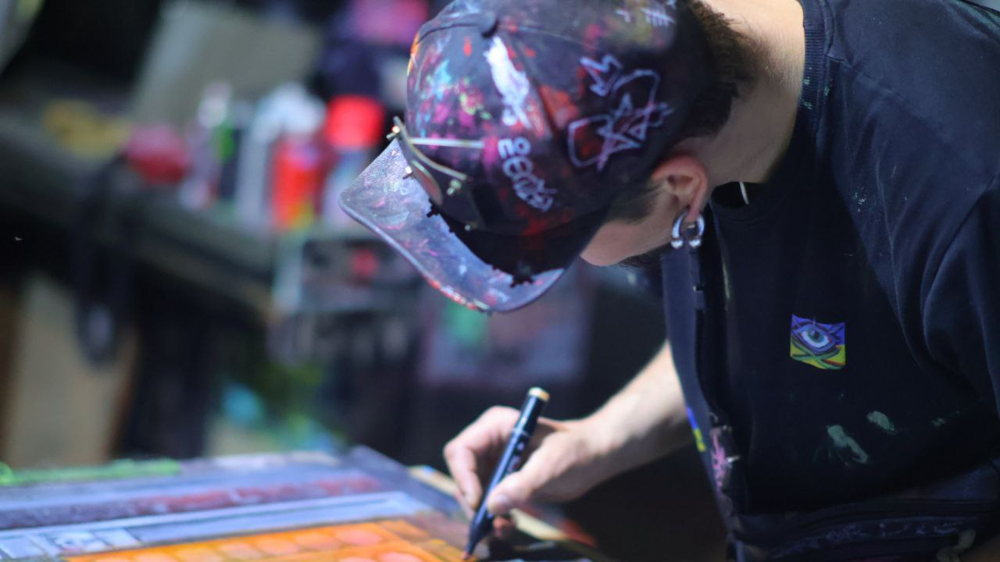

Майстер текстурного декору
Текстура — це мова, якою я спілкуюся з вашим інтер'єром.

Мене звати KoZ, і я перетворюю стіни на витвори мистецтва. Кожен мій проект — це експеримент з матеріалами, світлом та формою. Я не просто наношу штукатурку, я створюю атмосферу, яку можна відчути на дотик.